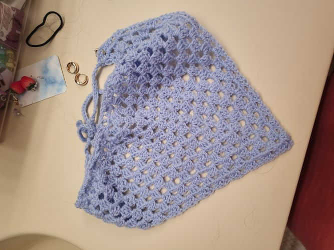

I started crocheting at the beginning of February after being told about how it could help with anxiety and adhd. From the point that I started till now, I have worked on several projects that can be seen here!
Pictured here is the first bandana that I made! The materials I used were:
I also made another matching bandana for my friend, but I added a yellow border around theirs. I used a shell stitch to do that, which is 5 dc (double crochet) in one stitch.
| Abbreviations | Written Out |
|---|---|
| ch | chain |
| sc | single crochet |
| hdc | half double crochet |
| dc | double crochet |